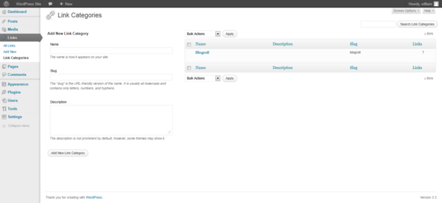

Languages:
English •
Link Categories SubPanel 日本語
Português do Brasil •
中文(简体) •
(Add your language)
As of Version 3.5, the Links Manager and blogroll are hidden for new installs and any existing WordPress installs that do not have any links. If you are upgrading from a previous version of WordPress with any active links, the Links Manager will continue to function as normal. If you would like to restore the Links panel to your install you may download and install the Links Manager plugin. This page is still relevant for any user with an existing Links Manager or with the plugin installed.
Links → Link Categories
Each Link in WordPress is filed under one or more Link Categories. This aids in navigation and allows Links to be grouped with others of similar content. In creating Link Categories, recognize that each Link Category name must be unique. This Screen allows you to create new Link Categories, and edit or delete existing ones.

Back to Administration Screens.
Link Categories
This Screen is divided into the Add Category and Link Categories Table sections.
Add Category
Presented to the left of this Screen is the Add New Link Category section which allows you to create a new Link Category. There are three pieces of information associated with each new Link Category: the name, the slug, and the description.
- Name
- To reiterate, the Link Category name must be unique.
- Slug
- Again, the Category slug must be unique.
- Description
- Category descriptions are optional. Some themes take advantage of Link Category descriptions, others do not, so having descriptions may change the way Link Categories are displayed for your site. Even if Link Categories are not used by your site's theme, you may still find them useful from an administration point of view.
- Add Category
- The most important part of the Add Category process. Once you've entered in all the information about your new Link Category, use this button to save it.
Table of Link Categories
This Table lists all of your Link Categories by row. Link Categories are displayed alphabetically.
The Table of Link Categories contains the following columns:
- [ ] - A checkbox that when clicked (checked), selects that particular Link Category.
- Name - The name of the Link Category. Remember, each name must be unique. Click on the Name to edit the Link Category.
- Description - Link Categories may have an optional description.
- Slug - The unique slug for this Link Category.
- Links - The number of Links which are members of the Link Category. Click on the number in the Links column to be directed to the Edit Links Screen to manage the Links in that Category.
Sortable Columns
Some column headings, such as the Name, Description, Slug, and Links, can be clicked to sort the Table of Link Categories in ascending or descending order. Hover over the column title, for example Name, to see the up-arrow or down-arrow. Click the heading to change the sort order.
Screen Options
The Screen Options allow you to choose which columns are displayed, or not displayed, in the underlying Table. Clicking on the Screen Options tab shows a list of the columns with a check-box next to each column. Check the box for each column you want displayed in the Table, or uncheck the box to not display that column. Click the Screen Options tab again to close the Screen Options.
Search
Above the Table, to the right, is a search box where you can enter a word, or series of words, and click the "Search Link Categories" button to search and display all the Link Categories meeting your search words.
Using Selection, Actions, and Apply
Selection
- In this Screen you can choose the Actions to be performed on one or more Link Categories displayed in the Table. For Actions to be performed on multiple Link Categories at once, those Link Categories must be first selected via one of the following methods:
- Select one Link Category at a time - To select a Link Category, the checkbox to the left of the Link Category entry must be checked (clicked). It is possible to keep selecting more Link Categories by checking their respective checkbox.
- Select all Link Categories in given Table - All Link Categories in a given table can be selected by checking the checkbox in the Table's title, or footer bar. Of course, unchecking the header or footer title bar checkbox will cause all entries in that Table to be unchecked (NOT selected).
- Reverse Selection - A Reverse Selection means checked items become unchecked, and unchecked items become checked. A Reverse Selection is accomplished by holding the Shift key on the keyboard and clicking the header or footer title bar checkbox.
Actions
- Actions describe the process to be performed on particular Link Categories. There are two styles of Actions that will be referred to as Bulk Actions and Immediate Actions. The follow describes these Actions:
- Bulk Actions - These Actions can be performed on one, or more Link Categories, at one time, if those Link Categories have been previously selected. Bulk Actions are available, when appropriate, as choices in the Actions pulldown box, above the table. The only Bulk Action allowed is Delete.
- Immediate Actions - Immediate Actions are performed immediately, on an individual Link Category. Hovering the mouse cursor over the Link Category row reveals the Edit, Quick Edit, View, and Delete options under the Name column in that Link Category row. Clicking on a Link Category Name will also initiate the Edit Action.
- The available Actions are described below:
- Edit - This Immediate Action displays the Edit Link Category Screen to edit the Link Category fields. This Action can be initiated by clicking on the Link Category Name or clicking on the Edit option just below the Link Category Name. See the Edit Link Category section for details on editing a Link Category.
- Quick Edit - This Immediate Action initiates the Quick Edit of that Link Category. See the Quick Edit section for details doing a Quick Edit on a Link Category.
- Delete - This Action deletes the Link Categories. Note: Deleting a category does not delete the links in that category, but any links that were only assigned to the deleted Category are set to the Default Link Category as defined in the Settings Writing Screen.
- View - This Action, if supported by the active theme's template, will display the Links belonging to the Link Category. View is available only as an Immediate Action.
Apply
- After one or more Link Categories are selected, and after a Bulk Action is specified, the Apply button performs the given Action on the selected Link Categories.
- Apply - Click the Apply button to execute the Bulk Action, specified in the Actions pulldown, on the selected Link Categories. Remember, prior to executing Actions, one or more Link Categories must be selected, as described before.
Quick Edit
- The following fields can be changed via the Quick Edit Action:
- Name
- To reiterate, the Link Category name must be unique.
- Slug
- Again, the Category slug must be unique.
- Cancel
- Click this button to cancel any changes and return to the Table of Link Categories
- Save
- Once you've edited all the information about the Link Category, use this button to save the changes.
Edit Link Category
This Screen is displayed when you select Edit Immediate Action or click on a Link Categories' Name in the Table of Link Categories. It is possible to edit three pieces of information associated with each Link Category: the name, the slug, and the description.
- Name
- To reiterate, the Link Category name must be unique.
- Slug
- Again, the Category slug must be unique.
- Description
- Category descriptions are optional. Some themes take advantage of Link Category descriptions, so having descriptions may change the way Link Categories are displayed for your site. Even if Link Categories are not used by your site's theme, you may still find them useful from an administration point of view.
- Update
- Once you've changed the Link Category information, use this button to save the changes.
{kind=link}